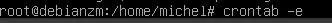

7. MUR de CAMERAS
Avertissement
Zoneminder doit être installé
Pour éviter des problèmes de capacité mémoire, vider le cache périodiquement avec CRON :
crontab -e 
Avec nano ou vim :
0 12 * * * sync; echo 3 > /proc/sys/vm/drop_caches
Ici la mémoire sera libérée des données cache et tampon tous les jours à 12H ;
Note
plus d’ infos : https://www.tomzone.fr/vider-la-memoire-cache-dun-serveur-linux/

Avertissement
Il est important d’ajouter les caméras dans Zoneminder les unes après les autres sans en supprimer afin que ces cameras suivent un ordre chronologique (1,2,3,4,5, 6, …)
Voir la page : http://domo-site.fr/accueil/dossiers/44
7.1- les pages index_loc.php, header.php, entete_html.php
Index_loc.php , en général, ne pas modifier
if (ON_MUR==true) {include ("include/mur_cam.php");
$_SESSION["zmuser"]=ZMUSER;$_SESSION["zmpass"]=ZMPASS;}
Note
$_SESSION[« zmuser »] et $_SESSION[« zmpass »], voir les explications ci-après
config.php
// utilisation du mur :true sinon false , Nom du mur , nb caméras
define('ON_MUR',true);// mise en service MUR
define('NOMMUR','');// nom du mur
define('NBCAM','0');// nombre caméras
// Zoneminder
define('ZMURL','http://192.168.1.23/zm');//IP/zm
define('ZMURLTLS','https:zoneminder.DOMAINE.ovh');// sous domaine
define('ZMUSER','michel');// pour mur_cameras.php
define('ZMPASS','MOT_PASSE');// pour mur_cameras.php
define('TIMEAPI','3400');//suivant la valeur indiquée dans zoneminder
header.php , il n’y a rien à modifier

entete_html.php , pour le switch ajouter cette ligne
<link href="bootstrap/bootstrap-switch-button.css" rel="stylesheet">
7.2- la page de monitor
mur_cam.php

{kind=link}
{kind=link}
{kind=link}
Le script du bouton On/Off , dans footer , ajouter cette ligne:
<script src="bootstrap/bootstrap-switch-button.js"></script>
{kind=link}
mur_cameras.php
{kind=link}
Avertissement
IMPORTANT : le fichier include/mur_cameras.php est indépendant du programme (‘est une image en retour) et de ce fait on ne peut utiliser les constantes définies dans admin/config.php
On va donc pour remédier à ce problème :
passer l’url en paramètre ainsi que l’Idx
utiliser les variables de session $_SESSION[« zmuser »] et $_SESSION[« zmpass »] pour le login et le mot de passe car ces données sont sensibles
Les fichiers sont tous UTF-8 sans BOM et l’url des caméras doit se trouver dans mur_cam.php. (ZMURL dans mur_cam.php et non dans mur_cameras.php);
Extrait de mur_cam.php
<?php
$scale=100;$i=1;$j=1;
while ($i <= NBCAM) {
$camImgId="cam".$i;
if ($j==1) {echo "<tr>";}
echo '<td>
<img id="'.$camImgId.'" src="include/mur_cameras.php?idx='.$i.'&url='.ZMURL.'&x=" rel="'.$i.'" class="dimcam" alt=""/></td>';
if (($j==2) || ($i==NBCAM)){ echo "</tr>";$j=0;}
$i++;$j++;}

7.3- Les scripts JS pour la vidéo dans footer.php
Le Zoom Bootstrap :

Important
Rafraichissement des images
Pour limiter l’utilisation de la bande passante, le rafraichissement des images n’a lieu que si le bouton est sur ON ; par contre même sur OFF le zoom d’une caméra est opérationnel La fonction updateImage() dans footer.php
function updateImage(camIndex)
{if (arret_mur==0) return false;
// get cam image ID
camImgId="cam" + camIndex;
// if cam image element is fully downloaded
if (document.getElementById(camImgId).complete==true)
{ now=new Date();
// update cam index to next cam
camIndex++;
if (camIndex > nbrCam) camIndex=1;
// update next cam URL to force refresh
camImgId="cam" + camIndex;
camImg=document.getElementById(camImgId);
camImgURL=camImg.src;console.log('gg'+camImgURL);
camImg.src=URL[camIndex]+now.getTime();
}
|image571|
{kind=link}
7.4- Ajouter une caméra
Il suffit d’indiquer dans admin/config.php le nb de caméras
define('NBCAM','8');// nombre